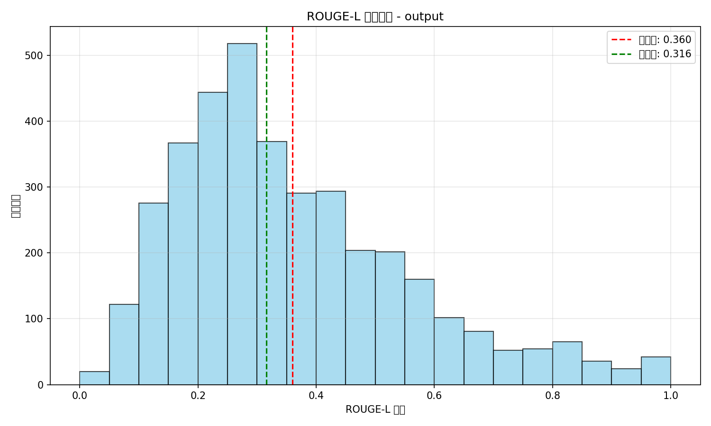
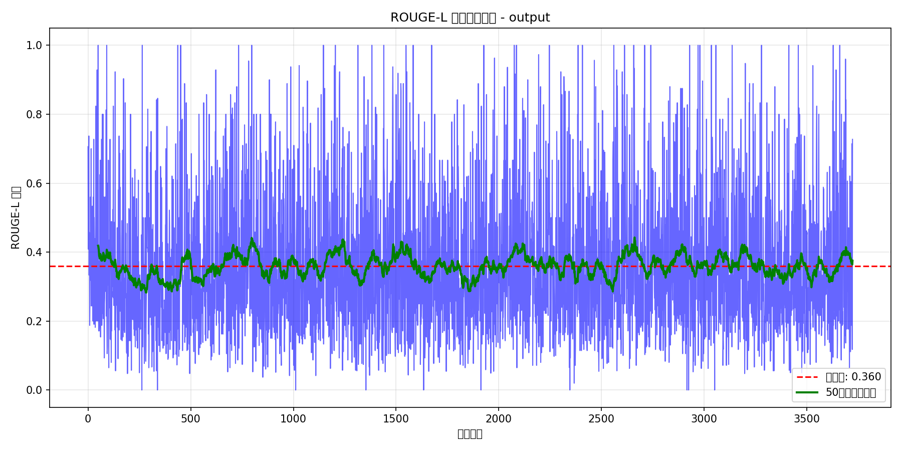
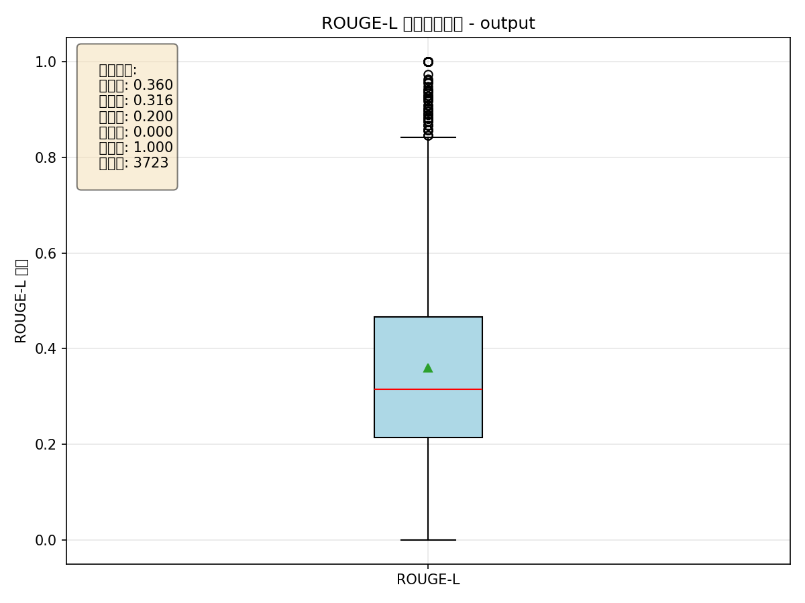

总样本数: 3723

ROUGE-L分数分布直方图

ROUGE-L分数变化趋势

ROUGE-L统计摘要箱线图
| ID | 问题 | 参考答案 | 模型预测 | ROUGE-L |
|---|---|---|---|---|
| 3660 | What type of capital is discussed in the text chunk?... | The text discusses environmental and manufactured capital.... | The text discusses Environmental and Manufactured Capital.... | 1.0000 |
| 3628 | What is the title of the DBS report mentioned in the text?... | The report is titled 'DBS Sustainability Report 2024 • Partnering for Asia’s Transition'.... | The report is titled 'DBS Sustainability Report 2024 • Partnering for Asia’s Transition'.... | 1.0000 |
| 3458 | Which report is listed as part of the environmental initiatives?... | The 2025 Environmental Progress Report is included in the environmental initiatives.... | The 2025 Environmental Progress Report is included in the environmental initiatives.... | 1.0000 |
| 3412 | Who is the Chief Executive Officer of DBS Group Holdings according to the sustainability report?... | Piyush Gupta holds the position of Chief Executive Officer at DBS Group Holdings.... | Piyush Gupta holds the position of Chief Executive Officer at DBS Group Holdings.... | 1.0000 |
| 3279 | Which abbreviation is associated with Anti-Money Laundering?... | AML is the abbreviation for Anti-Money Laundering.... | AML is the abbreviation for Anti-Money Laundering.... | 1.0000 |
| ID | 问题 | 参考答案 | 模型预测 | ROUGE-L |
|---|---|---|---|---|
| 262 | What are the dual aspects of the technologies described in the text?... | They offer significant potential benefits for customers but also present ethical risks.... | The technologies are both innovative and practical, addressing environmental challenges while being ... | 0.0000 |
| 338 | What type of product is described in the text chunk?... | The text refers to the Aluminum Apple Watch Series 9 with Sport Loop.... | It is a green loan specifically designed for affordable housing projects.... | 0.0000 |
| 1011 | What was the outcome for the supply chains after the programme?... | They achieved an improved ESG scoring.... | The supply chains were able to identify and implement solutions to address their challenges.... | 0.0000 |
| 1353 | How does the text describe the state of sustainable finance practices?... | They are currently lacking global consistency, similar to metrics and taxonomies.... | It states that sustainable finance is still in its infancy, indicating it is a developing field.... | 0.0000 |
| 1634 | When did China's reopening take place according to the text?... | It occurred at the turn of the year.... | China reopened in December 2022.... | 0.0000 |
完整评估结果已保存为JSON文件，包含所有3723个样本的详细数据。
可视化图表已保存为PNG格式，可直接用于报告和演示。